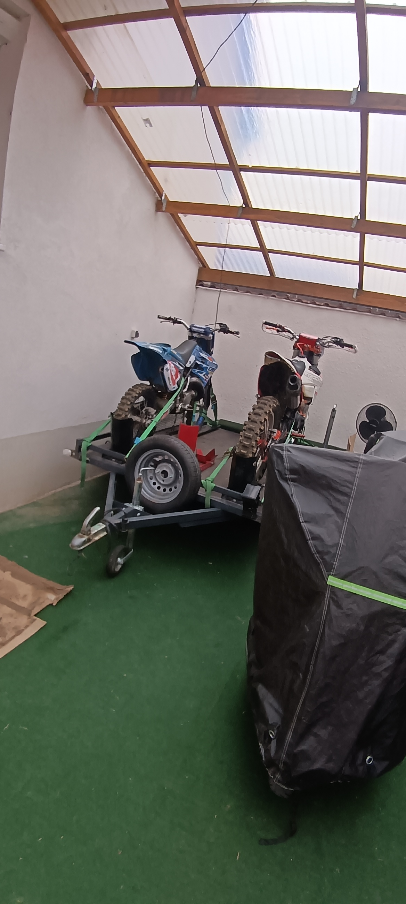
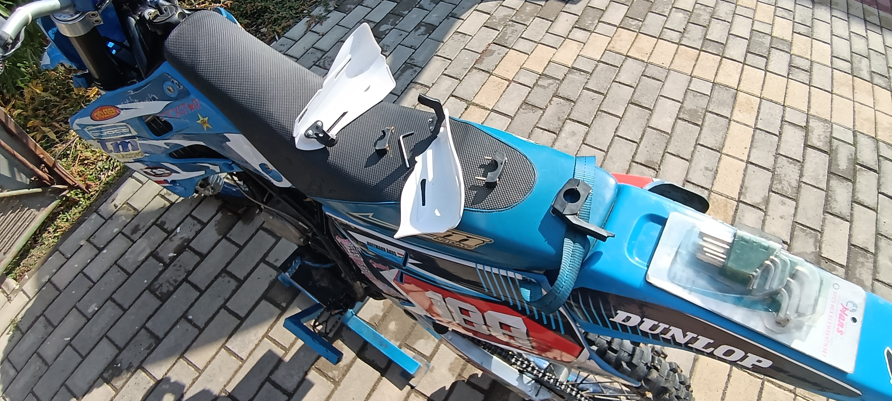
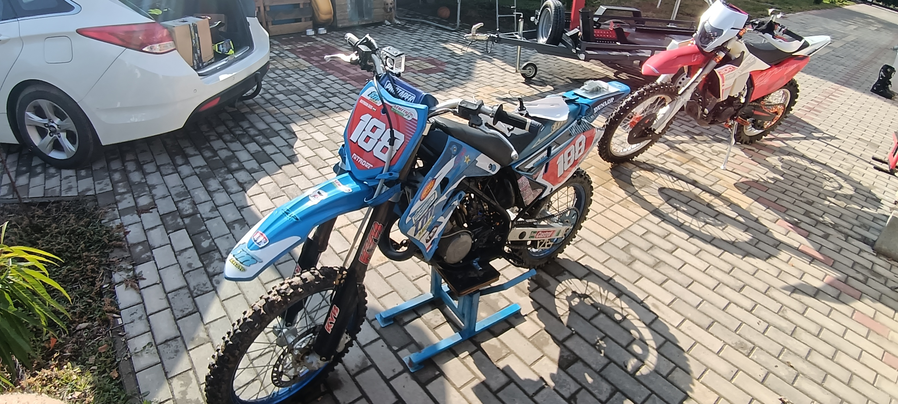
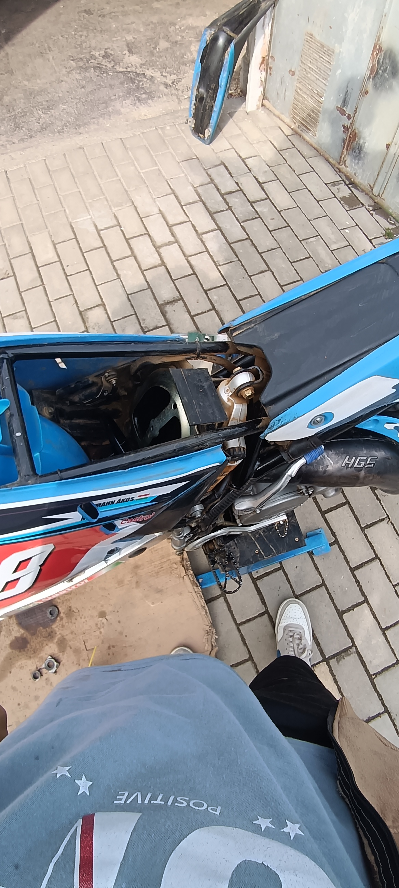
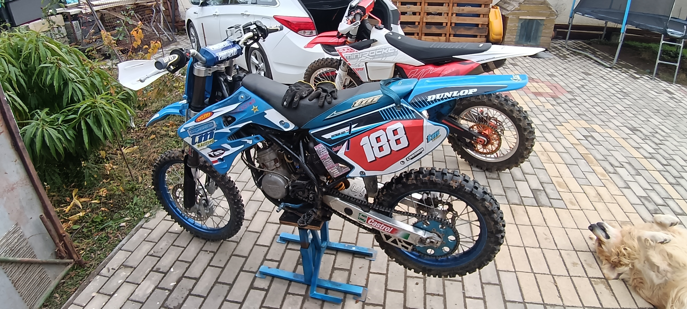
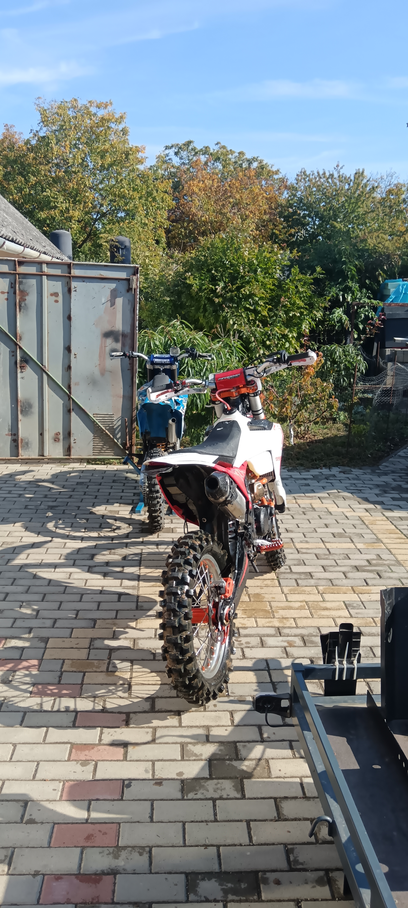
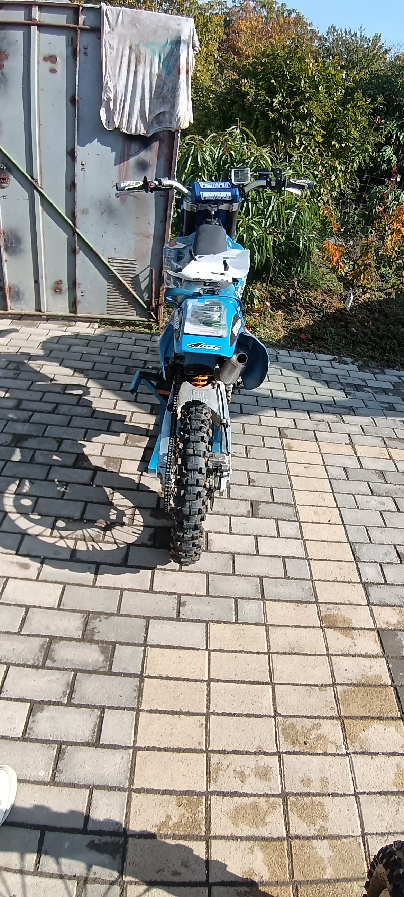
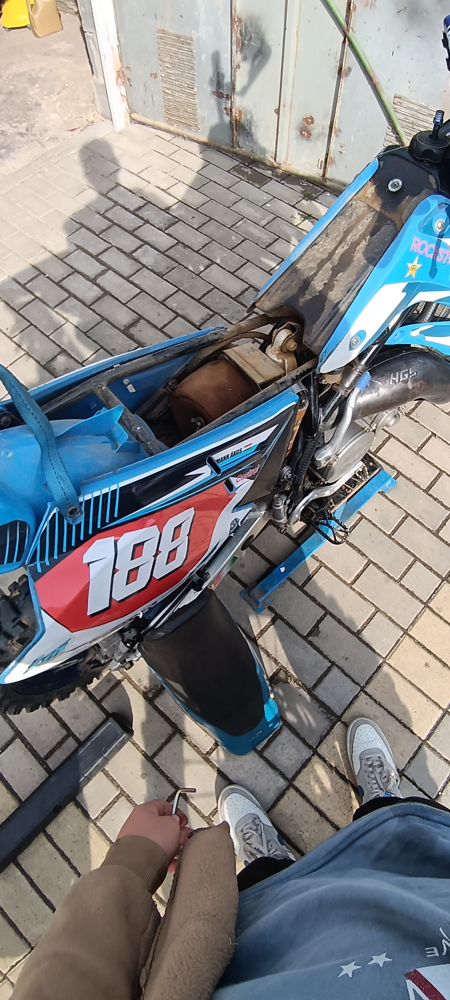
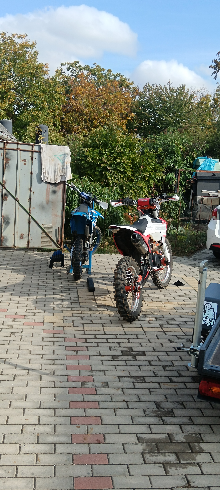

Vlog · motoros videók · bicikli
Vlog.
Motor.
Bicikli.
Vlogok, motoros videók és biciklis kalandok Dodó Józseftől.
A csatornáról
Videók
Válassz videót a listából.
Még nincs biciklis videó a listában.
-

Crossmotoros Shorts
Megnézem a YouTube-on ↗ -

Motoros videó
Megnézem a YouTube-on ↗ -

Forza Horizon 6 videó
Megnézem a YouTube-on ↗ -

Minecraft videó
Megnézem a YouTube-on ↗
Garázs fotók
Fotók
Motorok, pillanatok és közös kalandok.

Motoros pillanatokNagyítás ↗
Műhely pillanatokNagyítás ↗
Garázs előttNagyítás ↗
Szerelés közbenNagyítás ↗
Motor és a kutyaNagyítás ↗
Utak és kalandokNagyítás ↗
Garázs hátulnézetNagyítás ↗
MűhelymunkaNagyítás ↗
Közös parkolásNagyítás ↗A kamera mögött
Szia, Dodó vagyok.
A Dodó József csatornán a motoroké a főszerep. Crossmotoros pillanatok, műhelyfotók és videók a kamera előtt és mögött.
A motoros videókat a YouTube-csatornán találod. Nézz körül, és iratkozz fel, ha tetszik, amit látsz.
Motoros videók a csatornán